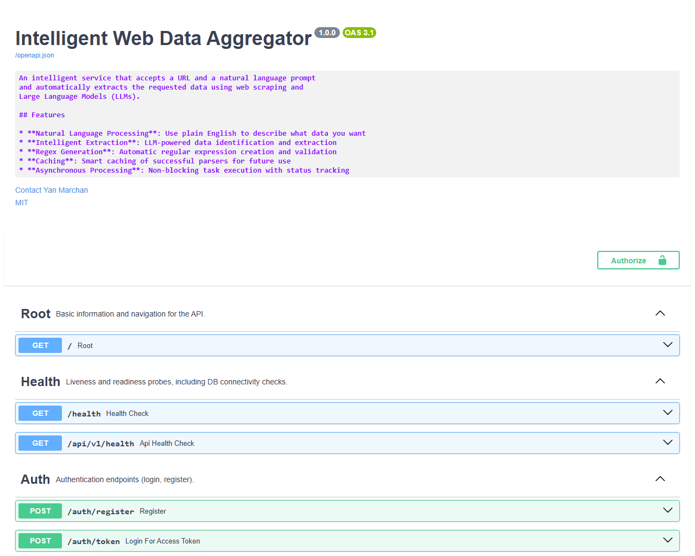

Demo Screenshots (1/3) — Authentication


- Flow: register → login → get JWT token
- Show: Swagger “Authorize” with Bearer token
- Optional: invalid login error state
Student: Yan Marchan
Program: Informatics (3rd year)
Supervisor: Evgeniy Tretyak
Jan 2026
CSS/XPath/regex) and require constant
maintenance.[LINK], [BUTTON], headings, tables, images).
Client
|
v
FastAPI API (port 8000) -----> PostgreSQL 15 (tasks, results, cache)
|
v
Redis (Celery broker / rate-limit store)
|
+--> AI Worker (queue: ai_queue) <----- Scheduler (Celery Beat)
|
+--> Headless Worker (queue: fetching_queue, Playwright) ---> Target Websites
POST /api/v1/process (JWT required).keywords /
schema_fields./api/v1/status and
/api/v1/result./docsPOST /auth/register, POST /auth/token → Bearer token
POST /api/v1/process,
GET /api/v1/status/{task_id}, GET /api/v1/result/{task_id}POST/GET/DELETE /api/v1/jobs
POST /api/v1/process
{
"url": "https://example.com/page",
"prompt": "Extract product title and price"
}
→ 202 { "task_id": "...", "status": "PENDING" }
inner_text: visible body textsemantic_text: enriched text with markers ([LINK],
[BUTTON], headings, tables, image alt/URLs)html: full DOM snapshot (stored with defensive cap)network: selected XHR/fetch/document/script events (preview)keywords (single-field extraction)schema_fields (multi-field structured extraction)target (what the user wants overall)"Price" →
price).WHY: Long-running extraction needs an async API with a reliable task lifecycle and clear contracts.
WHAT:
TECH: FastAPI, Uvicorn, Pydantic, Celery, Redis, SlowAPI, JWT.
POST /api/v1/process → task_id
GET /api/v1/status/{task_id}
GET /api/v1/result/{task_id}
POST /api/v1/jobs (cron)
WHY: Web pages change frequently; intent-driven extraction reduces brittle selector/regex maintenance.
WHAT:
schema_fields/keywords) + normalization.TECH: LiteLLM (Baseten/DeepSeek, Gemini fallback), prompt templates, local parser execution/validation.
prompt → intent(fields)
semantic_text/html → LLM extract examples/items
→ generate parser → validate → cache(url + fields)
→ run parser locally on full content
WHY: Need ACID storage for users, tasks, results, schedules, and cached parsers (plus captured page artifacts).
WHAT:
TECH: PostgreSQL 15, SQLAlchemy, Alembic migrations.
ScrapingTasks → TaskSourceData (semantic_text/html/network)
Users → ScheduledJobs (cron)
ParserCache key: (domain, full_url, fields, source_type)
| Entity | Purpose |
|---|---|
| Users | Authentication + ownership |
| ScrapingTasks | Status, prompt, extracted JSON, metadata |
| TaskSourceData | Semantic text / HTML / network previews |
| ScheduledJobs | Cron schedules per user |
| ParserCache | Reusable validated parsers + samples |
WHY: Separate fetching/rendering and LLM work from the API to scale independently and isolate failures.
WHAT:
TECH: Celery (queues: fetching_queue, ai_queue), Redis,
Postgres, Playwright.
API → Redis/Celery → Headless Worker → AI Worker → Postgres
Scheduler (Beat) enqueues recurring jobs
WHY: Prevent regressions in API contracts and extraction workflows across multiple services.
WHAT:
pytest-cov; baseline above the requirement.used_cached_parser.TECH: Pytest, pytest-cov.
Coverage summary (pytest-cov):
TOTAL 4168 statements, 926 missed → 78% covered
WHY: Reproducible environment for multi-service runtime (DB/Redis/workers) and a predictable demo setup.
WHAT:
TECH: Docker, Docker Compose.
docker compose up -d
docker compose ps
docker compose logs -f api
services:
postgres: postgres:15-alpine (healthcheck)
redis: redis:7-alpine (healthcheck)
api: FastAPI (8000)
headless_worker: Celery -Q fetching_queue (Playwright)
ai_worker: Celery -Q ai_queue (LLM + parsing)
scheduler: Celery Beat
WHY: A stable API contract and interactive UI speeds up integration and demo walkthroughs.
WHAT:
TECH: FastAPI OpenAPI + Swagger UI (/docs).
GET /docs # Swagger UI
GET /openapi.json # OpenAPI schema
Authorize: Bearer <token>
Try it out: /process → /status → /result



task_id/api/v1/status/{task_id} until
SUCCESS
GET /api/v1/result/{task_id}fields (e.g., name/price/link)total_matches +
used_cached_parser| Problem | Solution | What I learned |
|---|---|---|
| Dynamic JS pages + layout drift | Playwright render + semantic capture + validated parser cache | Make extraction robust by separating “understanding” from “parsing” |
| Prompt injection / unsafe instructions | Input sanitization + defense-in-depth prompts + strict pipeline | Security must be built into the workflow, not added later |
| Cached parser becomes stale | Self-healing: invalidate on failure and regenerate with validation | Monitoring + feedback loops keep automation reliable |
| Capability | Status |
|---|---|
| Async task API (process → status → result) | ✓ |
| Playwright rendering + semantic text capture | ✓ |
| LLM intent extraction + schema extraction | ✓ |
| Validated parser cache + self-healing | ✓ |
| User-owned scheduling (cron jobs) | ✓ |
| Testing coverage ≥ 70% | ✓ (78%) |
Production URL: N/A (not deployed; demo runs locally)
Repository: N/A (private/local) — archive: Marchan_Yan_Diploma_upd.zip
API Docs (Swagger): http://localhost:8000/docs
Project docs: docs_old/ARCHITECTURE.md, docs_old/USER_GUIDE.md
Design: N/A